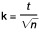

FPackV
Ausfertigungsdatum: 18.11.2020
Vollzitat:
"Fertigpackungsverordnung vom 18. November 2020 (BGBl. I S. 2504)"
| Ersetzt V 7141-6-1-6 v. 18.12.1981 I 1585 (FertigPackV 1981) |
(+++ Textnachweis ab: 1.12.2020 +++)
(+++ Zur Anwendung vgl. §§ 1 Abs. 2 Nr 2 und 3, 4 Abs. 4, 6 Abs. 1, 11, 20 -
23, 26, 32 Abs. 1, 33, 34 Abs. 5, 38 - 42 +++)
| § 1 | Anwendungsbereich |
| § 2 | Begriffsbestimmungen |
| § 3 | Kennzeichnung der Nennfüllmenge |
| § 4 | Allgemeine Vorschriften bei Kennzeichnung nach Gewicht oder Volumen |
| § 5 | Abtropfgewicht |
| § 6 | Besondere Vorschriften bei Kennzeichnung nach Gewicht oder Volumen |
| § 7 | Fertigpackungen mit Lebensmitteln |
| § 8 | Herstellerangabe |
| § 9 | Allgemeine Nennfüllmengenanforderungen |
| § 10 | Besondere Nennfüllmengenanforderungen |
| § 11 | ℮-Zeichen |
| § 12 | Anforderungen an EG-Düngemittel |
| § 13 | Anforderungen an vorverpackte kosmetische Mittel |
| § 14 | Anforderungen an kosmetische Mittel im Sinne des Artikels 19 Absatz 4 der Verordnung (EG) Nr. 1223/2009 |
| § 15 | Allgemeine Vorschriften |
| § 16 | Allgemeine Vorschriften für vorverpackte Lebensmittel |
| § 17 | Obst und Gemüse ohne Vorverpackung im Sinne des Artikels 44 Absatz 1 der Verordnung (EU) Nr. 1169/2011 |
| § 18 | Backwaren ohne Vorverpackung im Sinne des Artikels 44 Absatz 1 der Verordnung (EU) Nr. 1169/2011 |
| § 19 | Für den unmittelbaren Verkauf vorverpackte Lebensmittel im Sinne des Artikels 44 Absatz 1 der Verordnung (EU) Nr. 1169/2011 |
| § 20 | Weitere Bestimmungen zur Füllmengenkennzeichnung |
| § 21 | Kennzeichnung der Stückzahl |
| § 22 | Befreiung oder Erleichterung von der Füllmengenkennzeichnung |
| § 23 | Verbindliche Werte für die Nennfüllmengen bei Wein und Spirituosen |
| § 24 | Allgemeine Vorschriften bei Kennzeichnung nach Stückzahl |
| § 25 | Besondere Vorschriften bei Kennzeichnung nach Stückzahl |
| § 26 | Anforderungen an die Nennfüllmenge bei Kennzeichnung nach Stückzahl |
| § 27 | Allgemeine Vorschriften bei Kennzeichnung nach Länge oder Fläche |
| § 28 | Anforderungen an die Nennfüllmenge bei Kennzeichnung nach Länge oder Fläche |
| § 29 | Offene Packungen |
| § 30 | Verkaufseinheiten ohne Umhüllung |
| § 31 | Anforderungen an Fertigpackungen ungleicher Nennfüllmenge |
| § 32 | Minusabweichungen bei Fertigpackungen ungleicher Nennfüllmenge |
| § 33 | Fertigpackungen mit Füllmengen von weniger als 5 Gramm oder 5 Milliliter |
| § 34 | Fertigpackungen mit Füllmengen von mehr als 10 Kilogramm oder mehr als 10 Liter |
| § 35 | Angaben bei Maßbehältnis-Flaschen |
| § 36 | Genauigkeitsanforderungen |
| § 37 | Herstellerzeichen |
| § 38 | Lesbarkeit und Schriftgröße |
| § 39 | Mehrere Packungen, Sammelpackungen |
| § 40 | Marktüberwachung |
| § 41 | Kontroll- und Dokumentationspflichten |
| § 42 | Bezugstemperatur |
| § 43 | Ordnungswidrigkeiten |
| § 44 | Übergangsvorschriften |
| Anlage 1 | Verbindliche Werte für die Nennfüllmengen von Fertigpackungen mit Wein und Spirituosen |
| Anlage 2 | Festlegung abweichender Herstellungszeitpunkte für Fertigpackungen und andere Verkaufseinheiten |
| Anlage 3 | Verfahren zur Prüfung der Füllmenge nach Gewicht oder Volumen gekennzeichneter Fertigpackungen und anderer Verkaufseinheiten durch die zuständigen Behörden |
| Anlage 4 | Verfahren zur Prüfung der Füllmenge nach Länge, Fläche oder Stückzahl gekennzeichneter Fertigpackungen und anderer Verkaufseinheiten gleicher Nennlänge oder gleicher Nennfläche ohne Umhüllung durch die zuständigen Behörden |
| Anlage 5 | Abweichende Prüfzeiträume für Fertigpackungen und andere Verkaufseinheiten |
| Anlage 6 | Verfahren zur Prüfung von Maßbehältnis-Flaschen durch die zuständigen Behörden |
| Anlage 7 | Anforderungen an Messgeräte |
| Nennfüllmenge QN in g oder ml | Zulässige Minusabweichung | |
|---|---|---|
| in % von QN | in g oder ml | |
| 5 bis 50 | 9 | – |
| 50 bis 100 | – | 4,5 |
| 100 bis 200 | 4,5 | – |
| 200 bis 300 | – | 9 |
| 300 bis 500 | 3 | – |
| 500 bis 1 000 | – | 15 |
| 1 000 bis 10 000 | 1,5 | – |
| Nennfüllmenge QN in g oder ml | Werte der Verkehrsfähigkeit | |
|---|---|---|
| in % von QN | in g oder ml | |
| 5 bis 50 | 18 | – |
| 50 bis 100 | – | 9 |
| 100 bis 200 | 9 | – |
| 200 bis 300 | – | 18 |
| 300 bis 500 | 6 | – |
| 500 bis 1 000 | – | 30 |
| 1 000 bis 10 000 | 3 | – |
| Nennfüllmenge QN in g | Werte der Verkehrsfähigkeit in g |
|---|---|
| weniger als 100 | 1,0 |
| 100 bis weniger als 500 | 2,0 |
| 500 bis weniger als 2 000 | 5,0 |
| 2 000 bis 10 000 | 10,0 |
| Nennfüllmenge QN in kg oder l | Werte der Verkehrsfähigkeit | |
|---|---|---|
| in % von QN | in g oder ml | |
| 10 bis 15 | – | 150 |
| 15 bis 50 | 1,0 | – |
| 50 bis 100 | – | 500 |
| Mehr als 100 | 0,5 | – |
| Nennfüllmenge QN in kg | Werte der Verkehrsfähigkeit | |
|---|---|---|
| in % von QN | in g | |
| 10 bis 15 | – | 300 |
| 15 bis 50 | 2,0 | – |
| 50 bis 100 | – | 1 000 |
| Mehr als 100 | 1,0 | – |
| Nennfüllmenge QN in kg oder l | Werte der Verkehrsfähigkeit | |
|---|---|---|
| in % von QN | in g oder ml | |
| 10 bis 15 | – | 150 |
| 15 bis 50 | 1,0 | – |
| 50 bis 100 | – | 500 |
| Mehr als 100 | 0,5 | – |
| Nennvolumen in ml | Randvollvolumen in ml |
|---|---|
| 20 | 21,5 |
| 25 | 27 |
| 30 | 32,5 |
| 40 | 42,5 |
| Nennvolumen in ml | % des Nennvolumens | ml |
|---|---|---|
| bis 50 | 6 | – |
| 50 bis 100 | – | 3 |
| 100 bis 200 | 3 | – |
| 200 bis 300 | – | 6 |
| 300 bis 500 | 2 | – |
| 500 bis 1 000 | – | 10 |
| 1 000 bis 5 000 | 1 | – |
| Nennfüllmenge in g oder ml | Schriftgröße in mm |
|---|---|
| 5 bis 50 | 2 |
| mehr als 50 bis 200 | 3 |
| mehr als 200 bis 1 000 | 4 |
| mehr als 1 000 | 6 |
| Nennfüllmenge in ml | Schriftgröße in mm |
|---|---|
| 5 bis 200 | 3 |
| mehr als 200 bis 1 000 | 4 |
| mehr als 1 000 | 6 |
| Wein | Im Füllmengenbereich zwischen 100 ml und 1 500 ml sind ausschließlich die acht nachstehenden Nennfüllmengen zulässig: ml: 100 – 187 – 250 – 375 – 500 – 750 – 1 000 – 1 500 |
| Gelbwein | Im Füllmengenbereich zwischen 100 ml und 1 500 ml ist ausschließlich die nachstehende Nennfüllmenge zulässig: ml: 620 |
| Schaumwein | Im Füllmengenbereich zwischen 125 ml und 1 500 ml sind ausschließlich die fünf nachstehenden Nennfüllmengen zulässig: ml: 125 – 200 – 375 – 750 – 1 500 |
| Likörwein | Im Füllmengenbereich zwischen 100 ml und 1 500 ml sind ausschließlich die sieben nachstehenden Nennfüllmengen zulässig: ml: 100 – 200 – 375 – 500 – 750 – 1 000 – 1 500 |
| Aromatisierter Wein | Im Füllmengenbereich zwischen 100 ml und 1 500 ml sind ausschließlich die sieben nachstehenden Nennfüllmengen zulässig: ml: 100 – 200 – 375 – 500 – 750 – 1 000 – 1 500 |
| Spirituosen | Im Füllmengenbereich zwischen 100 ml und 2 000 ml sind ausschließlich die neun nachstehenden Nennfüllmengen zulässig: ml: 100 – 200 – 350 – 500 – 700 – 1 000 – 1 500 – 1 750 – 2 000 |
| Shochu | Im Füllmengenbereich zwischen 100 ml und 2 000 ml sind auch die folgenden Nennfüllmengen zulässig: ml: 720 – 1 800 |
| Wein | Wein im Sinne von Artikel 1 Absatz 2 Buchstabe l in Verbindung mit Anhang I, Teil XII, Buchstabe b der Verordnung (EU) Nr. 1308/2013 des Europäischen Parlaments und des Rates vom 17. Dezember 2013 über eine gemeinsame Marktorganisation für landwirtschaftliche Erzeugnisse und zur Aufhebung der Verordnungen (EWG) Nr. 922/72, (EWG) Nr. 234/79, (EG) Nr. 1037/2001 und (EG) Nr. 1234/2007 (ABl. L 347 vom 20.12.2013, S. 671), zuletzt geändert durch die Verordnung (EU) Nr. 2017/2393 (ABl. L 350 vom 29.12.2017, S. 15); KN-Code ex 2204 |
| Gelbwein | Französischer Wein im Sinne von Artikel 56 in Verbindung mit Anhang VII Ziffer 3 Buchstabe b mit der Ursprungsbezeichnung „Côtes du Jura“, „Arbois“, „L´Etoile“ und „Château-Chalon“ in Flaschen im Sinne von Anhang VII Ziffer 3 Buchstabe a der Delegierten Verordnung (EU) 2019/33 der Kommission vom 17. Oktober 2018 zur Ergänzung der Verordnung (EU) Nr. 1308/2013 des Europäischen Parlaments und des Rates in Bezug auf Anträge auf Schutz von Ursprungsbezeichnungen, geografischen Angaben und traditionellen Begriffen im Weinsektor, das Einspruchsverfahren, Einschränkungen der Verwendung, Änderungen der Produktspezifikationen, die Löschung des Schutzes sowie die Kennzeichnung und Aufmachung (ABl. L 9 vom 11.1.2019, S. 2) |
| Schaumwein | Weinbauerzeugnis im Sinne des Anhangs VII, Teil II Nummer 4, 7, 8 und 9 der Verordnung (EU) Nr. 1308/2013; KN-Code 2204 10 |
| Likörwein | Wein im Sinne des Anhangs VII Teil II Nummer 3 der Verordnung (EU) Nr. 1308/2013; KN-Code 2204 21 – 2204 29 |
| Aromatisierter Wein | Aromatisierter Wein im Sinne von Artikel 3 Absatz 2 der Verordnung (EU) Nr. 251/2014 des Europäischen Parlaments und des Rates vom 26. Februar 2014 über die Begriffsbestimmung, Beschreibung, Aufmachung und Etikettierung von aromatisierten Weinerzeugnissen sowie den Schutz geografischer Angaben für aromatisierte Weinerzeugnisse und zur Aufhebung der Verordnung (EWG) Nr. 1601/91 des Rates (ABl. L 84 vom 20.3.2014, S. 14); KN-Code 2205 |
| Spirituosen | Spirituosen im Sinne von Artikel 2 Absatz 1 bis 3 der Verordnung (EG) Nr. 110/2008 des Europäischen Parlaments und des Rates vom 15. Januar 2008 zur Begriffsbestimmung, Bezeichnung, Aufmachung und Etikettierung von Spirituosen sowie zum Schutz geografischer Angaben für Spirituosen und zur Aufhebung der Verordnung (EWG) 1576/89 (ABl. L 39 vom 13.2.2008, S. 16; KN-Code 2208), zuletzt geändert durch Verordnung (EU) Nr. 787/2019 (ABl. L 130 vom 17.5.2019, S. 1); KN-Code 2208 |
| Shochu | Spirituosen im Sinne von Artikel 24a der Verordnung (EG) Nr. 110/2008 |
| Erzeugnis | Zeitpunkt der Herstellung | |
|---|---|---|
| a) | Räucherwaren, Würste, die nach dem Einfüllen des Brätes in die Wursthülle noch nachbehandelt werden (räuchern, lufttrocknen, kochen, braten) | Nach Abschluss der Zweitverpackung durch verkaufsfertige Herrichtung wie Folienverpackung, Etikettierung, Anbringen von Plomben usw. |
| b) | schnittfeste Rohwürste | Sobald das Verhältnis von fleischeigenem Wasser zu Fleischeiweiß (Federzahl) 2,5 und bei einem Kaliberdurchmesser über 70 Millimeter 2,8 beträgt |
| c) | tiefgefrorene Erzeugnisse, tiefgefrorenes Schlachtgeflügel | Nach dem Schockgefrieren |
| d) | Speiseeis | Nach dem Aushärten nach mindestens 2-wöchiger Gefrierhauslagerung |
| e) | stückige Seife | 1 Stunde nach der Ausformung |
| Erzeugnis | Zeitpunkt der Herstellung | |
|---|---|---|
| a) | Obst- & Gemüsekonserven und sonstige pflanzliche Lebensmittel als Konserve | 30 Tage nach dem Sterilisieren |
| b) | Bratfischmarinaden | 48 Stunden nach dem Aufgießen |
| c) | Würstchen, Fleisch und andere Fleischerzeugnisse | 5 Tage nach dem Sterilisieren |
| d) | Mozzarella und Käse, der in einer oder aus einer Flüssigkeit in Verkehr gebracht wird | 5 Tage nach Abfüllung |
| N | n | c | d | k | |||
|---|---|---|---|---|---|---|---|
| 100 | bis | 500 | 50 | 3 | 4 | 0,379 | |
| 501 | bis | 3 200 | 80 | 5 | 6 | 0,295 | |
| 3 201 | bis | 10 000 | 125 | 7 | 8 | 0,234 | |
| 10 001 | und mehr | 160 | 8 | 9 | 0,207 | ||
| N | |||
|---|---|---|---|
| 10 | bis | 99 | |
| N | n | c | d | k | |||
|---|---|---|---|---|---|---|---|
| 10 | bis | 99 | 5 | 0 | 1 | 2,058 | |
| 100 | bis | 500 | 8 | 0 | 1 | 1,237 | |
| 501 | bis | 3 200 | 13 | 1 | 2 | 0,847 | |
| 3 201 | bis | 10 000 | 20 | 1 | 2 | 0,640 | |
| 10 001 | und mehr | 30 | 2 | 3 | 0,503 | ||
| N | n | c | d | k | |||
|---|---|---|---|---|---|---|---|
| 10 | bis | 99 | 5 | – | – | 2,058 | |
| 100 | bis | 500 | 8 | – | – | 1,237 | |
| 501 | bis | 3 200 | 13 | – | – | 0,847 | |
| 3 201 | bis | 10 000 | 20 | – | – | 0,640 | |
| 10 001 | und mehr | 30 | – | – | 0,503 | ||
| N | n | c | d | k | |||
|---|---|---|---|---|---|---|---|
| Unabhängig vom Losumfang (N ≥ 100) | 20 | 1 | 2 | 0,640 | |||
| N | n | |||
|---|---|---|---|---|
| Unabhängig vom Losumfang (N ≥ 20) | 20 | |||
| N | Losgröße | |||||||
| n | Stichprobenumfang | |||||||
| c | Annahmezahl | |||||||
| d | Rückweisezahl | |||||||
| k | Faktor zur Berechnung des Vertrauensbereichs; | |||||||
|  | mit t als Zufallsvariable der Studentverteilung | |||||||
| N | n | a | |||||
|---|---|---|---|---|---|---|---|
| 26 | bis | 50 | 3 | 1,0 | |||
| 51 | bis | 150 | 5 | 0,35 | |||
| 151 | bis | 500 | 8 | 0,2 | |||
| 501 | bis | 3 200 | 13 | 0,15 | |||
| 3 201 | bis | 10 000 | 20 | 0,1 | |||
| 10 001 | und mehr | 30 | 0,085 | ||||
| N | Losgröße | ||||||
| n | Stichprobenumfang | ||||||
| a | Faktor zur Berechnung des Sicherheitszuschlages |
| Erzeugnis | Prüfzeitraum | |
|---|---|---|
| a) | Backwaren ohne Vorverpackung | Bis 11 Stunden nach dem Zeitpunkt der Backofenentnahme |
| b) | Frisches Obst oder Gemüse, Kartoffeln | Bis zu 1 Monat nach dem Zeitpunkt der Herstellung |
| c) | Lösungsmittelhaltige Klebstoffe | Bis zu 1 Woche nach dem Zeitpunkt der Herstellung |
| Erzeugnis | Prüfzeitraum | |
|---|---|---|
| a) | Obst, Gemüse und sonstige pflanzliche Lebensmittel als Konserve | Bis 2 Jahre nach dem Zeitpunkt der Herstellung |
| b) | Fische, Erzeugnisse aus gesalzenen Fischen, Anchosen, Marinaden, Kochfischwaren, Fischdauerkonserven, Muscheln, Krabben, wechselwarme Tiere, Krusten- und Schalentiere, Weichtiere oder Erzeugnisse aus diesen Tieren, außer glasierte Erzeugnisse | Bis 14 Tage nach dem Zeitpunkt der Herstellung |
| c) | Bratfischmarinaden | Bis 14 Tage nach dem Zeitpunkt der Herstellung |
| d) | Mozzarella und Käse, der in einer oder aus einer Flüssigkeit in Verkehr gebracht wird | Bis 14 Tage nach dem Zeitpunkt der Herstellung |
| Der Mittelwert der Stichprobe ist: |  |

| Nennfüllmenge QN der Fertigpackung in [g] oder [ml] | größter zulässiger Eichwert in [g] | |||||||
|---|---|---|---|---|---|---|---|---|
| von | 5 | bis weniger als | 10 | 0,1 | ||||
| von | 10 | bis weniger als | 25 | 0,2 | ||||
| von | 25 | bis weniger als | 150 | 0,5 | ||||
| von | 150 | bis weniger als | 350 | 1,0 | ||||
| von | 350 | bis weniger als | 1 750 | 2,0 | ||||
| von | 1 750 | bis weniger als | 3 500 | 5,0 | ||||
| von | 3 500 | bis weniger als | 7 000 | 10,0 | ||||
| von | 7 000 | bis weniger als | 25 000 | 20,0 | ||||
| von | 25 000 | bis weniger als | 50 000 | 50,0 | ||||
| von | 50 000 | bis weniger als | 100 000 | 100,0 | ||||
| von | 100 000 | bis weniger als | 600 000 | 200,0 | ||||
| von | 600 000 | bis | 1 500 000 | 500,0 | ||||
| Nennfüllmenge QN der Fertigpackung in [g] oder [ml] | größter zulässiger Eichwert in [g] | |||||||
|---|---|---|---|---|---|---|---|---|
| von | 5 | bis weniger als | 20 | 0,1 | ||||
| von | 20 | bis weniger als | 50 | 0,2 | ||||
| von | 50 | bis weniger als | 175 | 0,5 | ||||
| von | 175 | bis weniger als | 500 | 1,0 | ||||
| von | 500 | bis weniger als | 5 000 | 2,0 | ||||
| von | 5 000 | bis weniger als | 10 000 | 5,0 | ||||
| von | 10 000 | bis weniger als | 15 000 | 10,0 | ||||
| von | 15 000 | bis weniger als | 50 000 | 20,0 | ||||
| von | 50 000 | bis | 100 000 | 50,0 | ||||